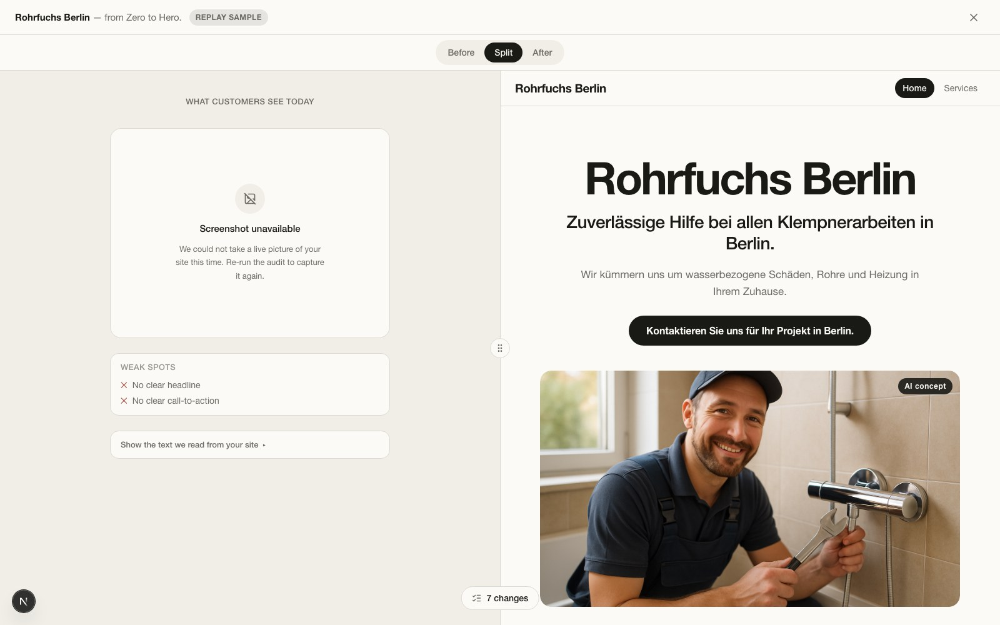
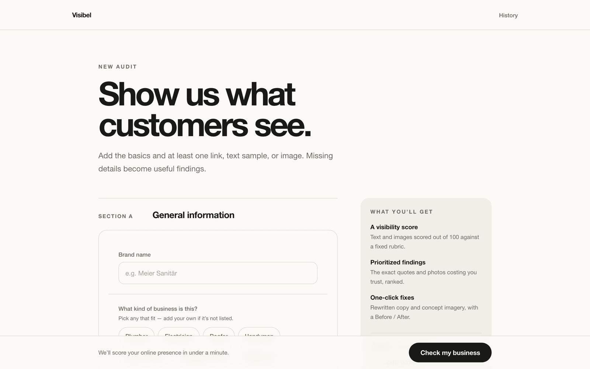
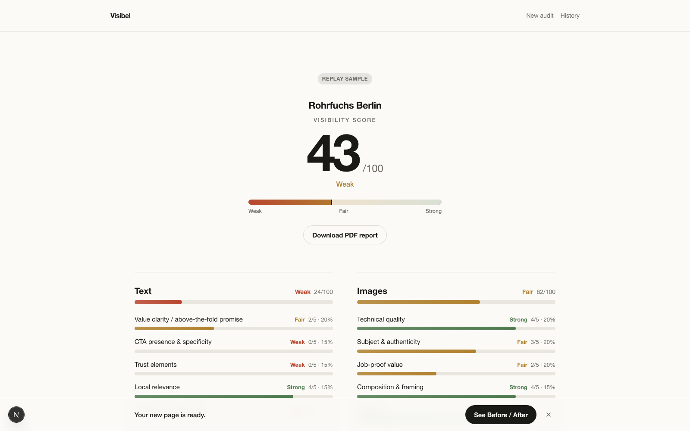
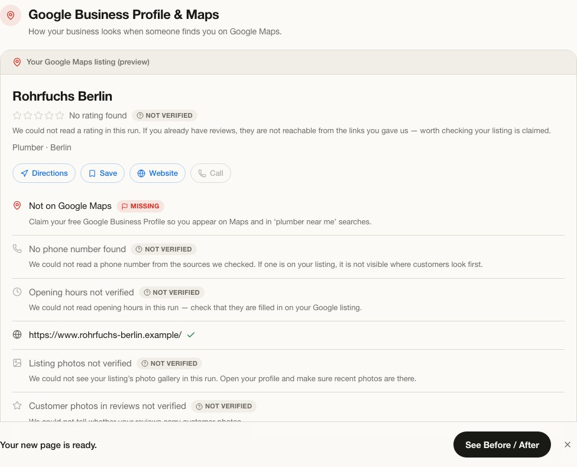
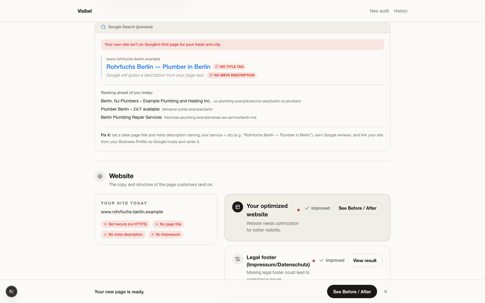
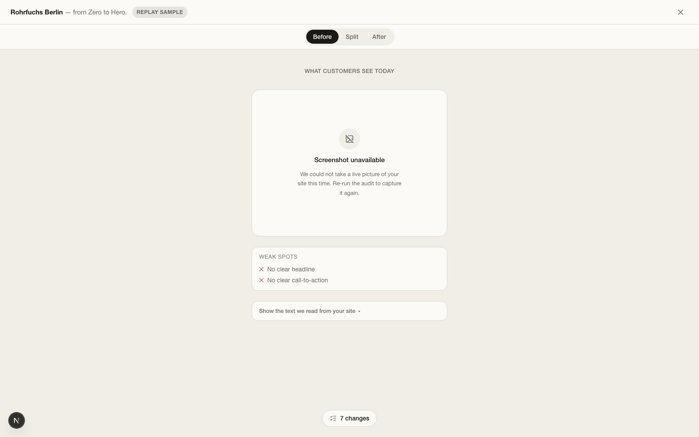
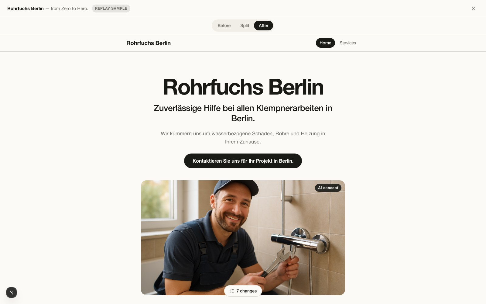

From zero to hero.
Visibel audits how customers actually see a local business online — website, Google Maps listing, directory profile — then rewrites and re-illustrates it in one click.

The recorded demo audit — a REPLAY of a real LIVE run, republished under a fictional business persona. Left: what customers see today. Right: the page Visibel wrote and illustrated in one click.
See it work
Two minutes, one real audit.
Three links in, a visibility score and a rebuilt page out — watch the full run end to end.
What it does
One shot at a first impression.
A plumber in Berlin has one shot at a first impression: a Maps listing with no hours and no photos, a website from 2009, and three blurry pictures of a wall. They know it looks bad. They do not know what to fix, in what order, or how the fixed version would look.
Visibel takes three links — website, Google Maps, directory listing — and returns a visibility score out of 100, backed by the exact quotes and photos costing the business trust. Every generated pixel is labelled. Every failed provider call is shown as a failure, never quietly replaced with a fixture.
Two AI experts read it like a customer
A Copy Strategist scores the words. A Visual Director scores every photo. Both run in parallel, structured-output only.
A rubric, never a model, computes the score
Pure TypeScript turns sub-scores into totals, bands and a ranked list of what to fix — reproducible and unit-testable.
One button rewrites everything
Copy, layout and missing photography are regenerated together, and the business sees its own optimized page beside the real one.
How it works
Five stages, one honest pipeline.
LIVE and REPLAY run the same orchestration code path and the same progress steps — replay only swaps evidence and model calls for a recorded fixture.
Evidence
Cheerio fetch with a Tavily extract fallback, a Tavily findability search, a Playwright read of the Maps listing, and a sharp-normalized image harvest.
Experts
Two parallel structured-output calls: a Copy Strategist scoring text (T1–T8) and a Visual Director scoring every photo (I1–I6).
Rubric
Pure TypeScript computes every total, band and priority. Models return sub-scores; they never compute a number.
Synthesis
One call writes the prose — structurally incapable of changing a score, since its schema has no score field.
Persist
Report, channels and assets are written to SQLite behind one frozen contract in lib/schemas.ts.
Improve — "Do It All For You"
Per-channel rewrites and gpt-image-2 concept photos stream into the open report over SSE; the Before/After preview assembles from what actually worked.
Walkthrough
Every screen, a real run.



MISSING, unprovable things left NOT VERIFIED.


Key features
Built to be checked, not trusted blindly.
Live Google Business Profile corroboration
A bare Maps link is read with Playwright; real fields are ticked "from Google", absent ones flagged MISSING, anything unprovable stays NOT VERIFIED.
Deterministic rubric engine
lib/rubric.ts owns every number. Structured Outputs enforce the model schema server-side — a bad value, never a bad shape.
One-click full-page optimization
A single CTA runs every channel with live per-item progress, partial-failure recovery, and no all-or-nothing blocking.
Async streamed image generation
The report completes first; gpt-image-2 images land in the open page as they finish, with a partial frame shown mid-generation.
Image semantics, not just pixels
Harvested and generated images are classified by content category and filled against per-trade composition quotas — the gallery never repeats one photo.
Honest degradation
A Tavily outage or an OpenAI error surfaces as an error chip and an ASSUMPTION-labelled finding — never silently substituted content.
Zero-key demo path
DEMO_MODE=replay runs the whole flow from a recorded LIVE audit: no network, no keys, same UI, permanent REPLAY SAMPLE badge.
PDF export & shareable preview
The persisted evidence exports as an A4 report; the optimized page includes a URL-addressable Services subpage.
Under the hood
Mature stack, no glue-code magic.
Quick start
Try it with zero API keys.
Replay reads a truthful recording of a completed LIVE audit — zero network calls, zero keys, and a REPLAY SAMPLE badge on every screen that says so.
pnpm install
pnpm exec playwright install chromium
cp .env.example .env
# no keys? everything still runs:
DEMO_MODE=replay pnpm dev
# → http://localhost:3000